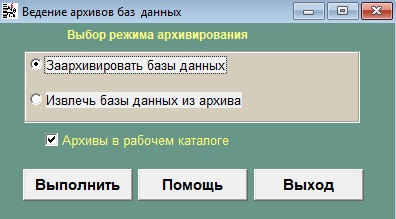
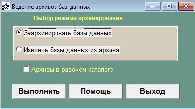
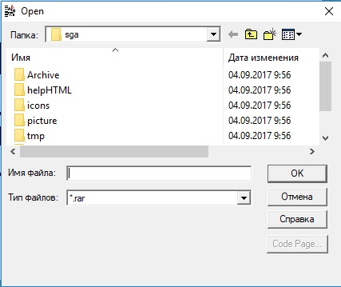
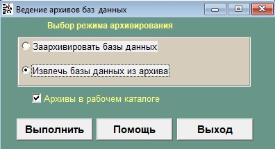
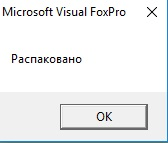
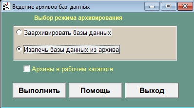
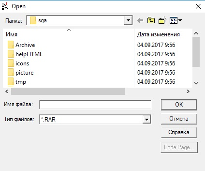
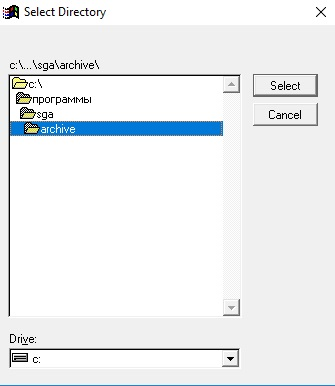
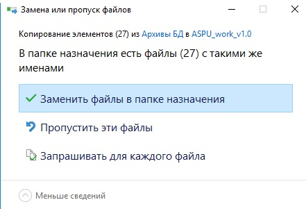

Sous-systeme "Archivage"
В конец документа
Данный режим работы предназначен для ведения архивов баз данных. Ведение архивной информации необходимо для хранения и аварийного восстановления баз данных.
Внешний вид окна подсистемы "Архивы БД" представлен на рисунке 1.

Рисунок 1 - Архивы БД по умолчанию
В данной подсистеме возможны следующие действия:
-
Заархивировать БД в папке по умолчанию. Для этого сделайте следующие действия:
- Выбираем - "Заархивировать базы данных", смотри рисунок 1.
- Ставим галочку "Архивы в рабочем каталоге", смотри рисунок 1.
- Нажать кнопку "Выполнить."
- Дождаться сообщения заархивировано. смотри рисунок 2.

Рисунок 2 - Сообщение "Заархивировано"
- Нажать кнопку "OK". После нажатии данной кнопки произойдет возврат к главной форме подсистемы "Архивы БД".
-
Заархивировать БД в выбранной папке. Для этого сделайте следующие действия:
- Выбираем - "Заархивировать базы данных", смотри рисунок 3.
- Убираем галочку "Архивы в рабочем каталоге", смотри рисунок 3.
Рисунок 3 - Архивы БД в выбранной папке
-
Нажать кнопку "Выполнить.". После этого откроется окно смотри рисунок 4.

Рисунок 4 - Выбор папки сохранения архива
- Выбрать папку в которую будет сохранятся архив.
- Ввести имя архива.
- Нажать кнопку "OK".
- Дождаться сообщения "Заархивировано". смотри рисунок 2.
- Нажать кнопку "OK". После нажатии данной кнопки произойдет возврат к главной форме подсистемы "Архивы БД".
-
Извлечь архив БД в папку по умолчанию. Для этого сделайте следующее действия:
- Выбираем - "Извлечь базы данных из архива", смотри рисунок 5.
- Ставим галочку "Архивы в рабочем каталоге", смотри рисунок 5.

Рисунок 5 - Извлечение архива БД по умолчанию
- Нажать кнопку "Выполнить."
-
Дождаться сообщения "Распаковано". смотри рисунок 6.

Рисунок 6 - Сообщение "Распаковано"
- Нажать кнопку "OK". После нажатии данной кнопки произойдет возврат к главной форме подсистемы "Архивы БД".
-
Извлечь архив БД в выбранную папку. Для этого сделайте следующее:
- Выбираем - "Извлечь базы данных из архива", смотри рисунок 7.
- Убираем галочку "Архивы в рабочем каталоге", смотри рисунок 7.

Рисунок 7 - Извлечение архива БД в выбранную папку
-
Нажать кнопку "Выполнить."После этого откроется окно смотри рисунок 8.

Рисунок 8 - Выбор файла архива
-
Выбрать файл архива *.rar.
-
При создании архива ничего не меняли:
- Заходим в папку программы(по умолчанию C:\Program Files (x86)\ASPU).
- Заходим в папку - Archive.
- Выбираем файл - АСПУ.rar.
- Нажимаем кнопку "OK".
-
При создании архива изменили путь сохранения архива или имя архива.
- Находим папку в которую сохранили архив.
- Выбираем файл архива *.rar или *.RAR (*-имя которым назвали архив).
- Нажимаем кнопку "OK".
-
Выбираем папку в которую архив извлекается, смотри рисунок 9.

Рисунок 9 - Выбор папки извлечения архива
- Нажать кнопку Select.
- Дождаться сообщения - "Распаковано" смотри рисунок 6.
-
Нажать кнопку "OK". После нажатии данной кнопки произойдет возврат к главной форме подсистемы "Архивы БД".
Примечание: для того чтобы восстановить бд из извлеченного архива, надо проделать следующие действия:
- Зайти в папку в которую извлекли архивы(По умолчанию: C:\SGA\Архивы БД).
- Выделить все файлы *.dbf, *.cdx, *.fpt(выделять - ctrl+A или ctrl+левая кнопка мыши).
- Нажать правой кнопкой мыши, для открытия подменю.
- Из выпадшего подменю нажать кнопку "Копировать".
- Зайти в папку с программой
- Нажать правой кнопкой мыши на свободном месте.
-
Из выпавшего подменю нажать вставить, если система спрашивает заменить ли файлы, смотри рисунок 10, ответить - "Копировать с заменой".

Рисунок 10 - Вопрос о копировании с заменой
CTRL+C - Копировать, CTRL+V - вставить.